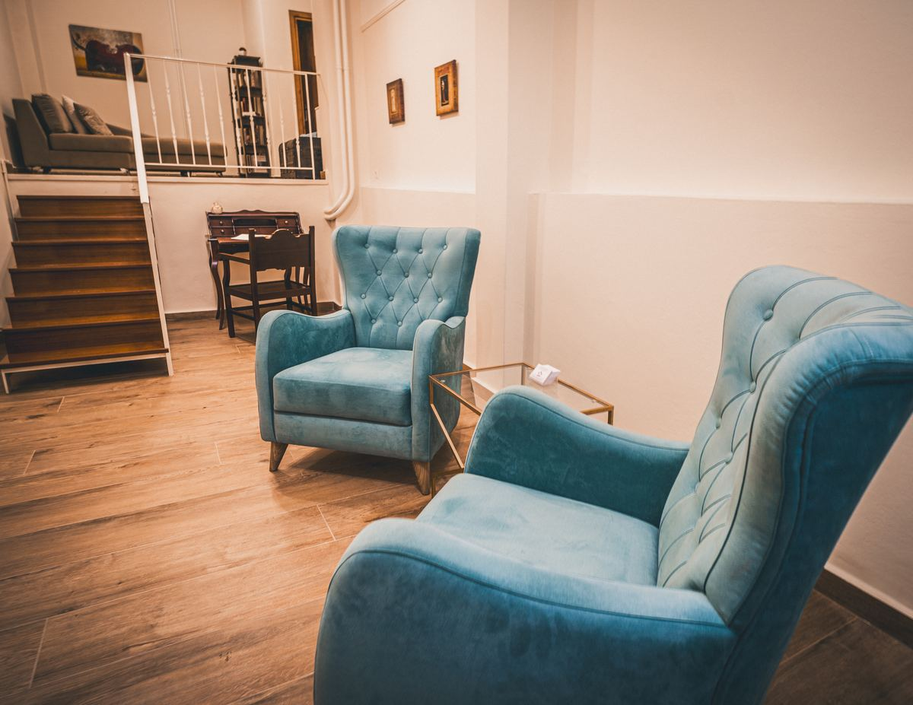
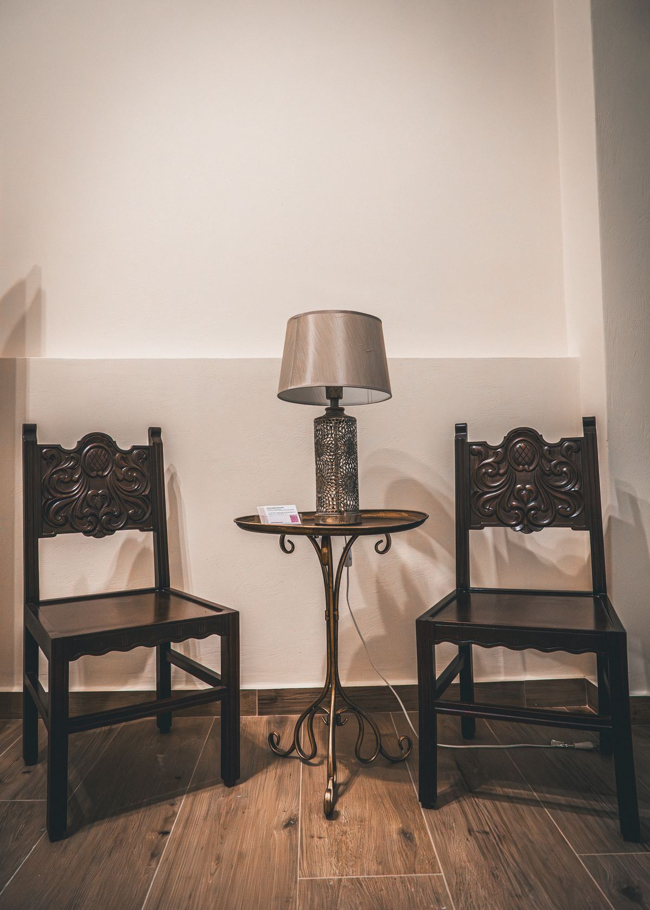

Η Προσέγγιση
Η Daseinsanalysis είναι μια φαινομενολογική και υπαρξιακή ψυχοθεραπευτική προσέγγιση που στηρίζεται στη συνομιλία, την αναστοχαστική διαδικασία και την ερμηνεία.
Περισσότερα →Ψυχολόγος/ Ψυχοθεραπεύτρια - Φαινομενολογικής & Υπαρξιακής Ανάλυσης
“Full of merit, yet poetically, man Dwells on this earth” - HeideggerΕπικοινωνία


Η Τριανταφυλλιά Ηλιοπούλου έχοντας ολοκληρώσει τις σπουδές της στην Ψυχολογία και στον τομέα της Εγκληματολογίας (BSc, MSc, PhD) όπως και την πενταετή εκπαίδευση της στη Φαινομενολογική – Υπαρξιακή Ανάλυση & Ψυχοθεραπεία (Daseinsanalysis) διατηρεί το ιδιωτικό της γραφείο από το 2014. Η Daseinsanalysis είναι μια ψυχοθεραπευτική προσέγγιση που βασίζεται στην ερμηνευτική φαινομενολογία όπως αναδύθηκε μέσα από τη συνομιλία της ψυχανάλυσης με τη φιλοσοφία.
Οι υπηρεσίες που παρέχει περιλαμβάνουν ατομικές συνεδρίες ψυχοθεραπείας ή ανάλυσης σε ενήλικες ανάλογα με τις ανάγκες και τις δυσκολίες του ατόμου μέσα από το φαινομενολογικό και υπαρξιακό βλέμμα. Οι συνεδρίες πραγματοποιούνται είτε δια ζώσης είτε διαδικτυακά. Το κλίμα του θεραπευτικού πλαισίου διέπεται από ασφάλεια, σεβασμό, εχεμύθεια και τηρείται το απόρρητο βάσει του Κώδικα Δεοντολογίας. Επιπλέον, παρέχει εποπτεία σε επαγγελματίες καλλιεργώντας τον αναστοχασμό και τον συντονισμό του εαυτού με τον επαγγελματία.
Περισσότερα →Η Daseinsanalysis είναι μια φαινομενολογική και υπαρξιακή ψυχοθεραπευτική προσέγγιση που στηρίζεται στη συνομιλία, την αναστοχαστική διαδικασία και την ερμηνεία.
Περισσότερα →Οι παρεχόμενες υπηρεσίες περιλαμβάνουν ατομικές συνεδρίες ψυχοθεραπευτικού ή αναλυτικού τύπου σε ενήλικες.
Περισσότερα →Παρέχεται εποπτεία για επαγγελματίες, με στόχο την καλλιέργεια ασφαλούς αναστοχασμού και επαγγελματικής ανάπτυξης.
Περισσότερα →